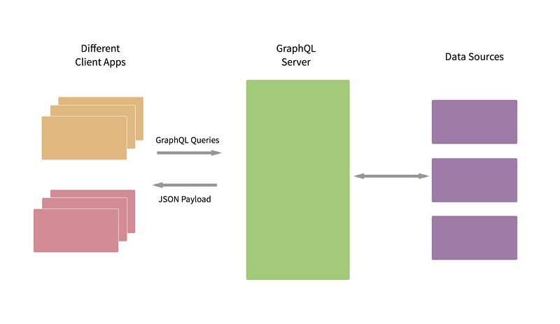

通过 Github V4 API 来了解 GraphQL
条评论前几天看到一篇名为 现代后端开发者必备技能 的博客. 其中有一个条目提到了 GraphQL, 称它为 REST 2.0, 再加上之前偶然间看到最新版的 Github API 使用了 GraphQL, 便想了解一下它到底是个什么东东.
GraphQL 是 Graph Query Language 的简称, 在 Github 官方文档 中指出了 GraphQL 的几个特点:
A Specification可以在 API Server 上定义 Schema, 客户端发起的 query 请求会基于 Schema 进行验证;Strongly typed强类型; 可以在 Schema 中指定某个 field 的类型, 以及不同对象之间的关系;Introspective客户端可以通过 query 获取详细的 Schema 定义;HierarchicalAPI 调用是基于 query 中指定的层级关系及 fields 进行返回的, 不会返回不必要的冗余信息;An application layerGraphQL 不是一种数据存储模型或者数据库查询语言, 它可以连接不同的数据存储源;
下图展示了 GraphQL 的工作模型:

Github 之所以转向 GraphQL, 是因为它更加地灵活:
- 可以精确地定义所需要的数据, 减少数据冗余;
- 可以只通过一个 GraphQL 请求就得到之前需要好几个 REST 请求才能获取的数据.
下面是 Github 官方文档解释为什么使用 GraphQL 的原文:
GitHub chose GraphQL for our API v4 because it offers significantly more flexibility for our integrators. The ability to define precisely the data you want—and only the data you want—is a powerful advantage over the REST API v3 endpoints. GraphQL lets you replace multiple REST requests with a single call to fetch the data you specify.
GraphQL 基本概念介绍
Schema
Schema 定义了 GraphQL API 的类型系统, 可以简单把它类比成 MySQL 中数据库中的各个表的 Schema 定义. Schema 定义了 GraphQL 查询可以操作的数据内容, 客户端的查询会基于 Schema 进行校验和执行.
下面我们可以给出一个简单的 Github 中当前用户 viewer 的示例 Schema 定义:
type User{ |
当上面的 Schema 定义好并添加到 API Server 中后, 我们便可以通过类似如下的查询去获取我们期望的数据:
query { |
我们可以在 Github GraphQL Explorer 执行上面的查询, 就可以得到类似如下的输出:
{ |
Scalar
Scalar 其实指的就是基本数据类型, 包括 String, Int, Bool 等.
Field
Field 是客户端从 API Server 获取的某个内容, 例如某个字段或者某个对象等. 可以简单把 field 理解成是对象的成员变量. 在 GraphQL 的查询中, 所有的操作必须指向最底层的 field , 即这个 field 的类型是 Scalar 类型.
Connection
Connection 表明的是和当前对象相关联的一些别的对象. 例如对于 Github 中的当前用户 viewer, 它会有相关联的 repositories , 我们便可以在其中定义 RepositoryConnection.
Edge
它表示 Node 之间的 Connection, 当查询一个 connection 时, 通过 connection 达到别的节点.
Node
Node 可以理解成节点对象, 我们最终就是会获取 Node 中的不同 Field.
基于 Github 练习如何使用 GraphQL
我们可以使用 curl 来往 https://api.github.com 发送 GraphQL 请求, 这需要我们先获取一个 Github 的 Token 并把它放置在 Header 中. 例如我们可以通过下面的命令获取整个 Github API 的 Schema:
curl -H "Authorization: bearer your-github-token" https://api.github.com/graphql |
我们可以通过之前介绍过的 vim rest console 插件 来发送获取当前用户名的请求:

当然更方便的方式还是通过 Github GraphQL Explorer 来发送请求. 例如我们可以在其中执行下面的查询来获取当前用户创建的 5 个 repo:
query { |
执行的结果如下图所示:

我们还可以通过上图中的最右侧边栏查看 GraphQL 的 Schema.
总结
本文只是简要介绍了 GraphQL 中的一些基本概念, 以及如何进行数据查询. 后续还需要研究如何设计 GraphQL Schema 并启动对应的 API Server, 以及如何通过 GraphQL 进行数据的修改等.
参考文献
推荐阅读
- 本文链接：https://hiberabyss.github.io/2018/05/22/graphql-introduction-via-github-api/
- 版权声明：本博客所有文章除特别声明外，均采用 CC BY-NC-SA 3.0 CN 许可协议。转载请注明出处！